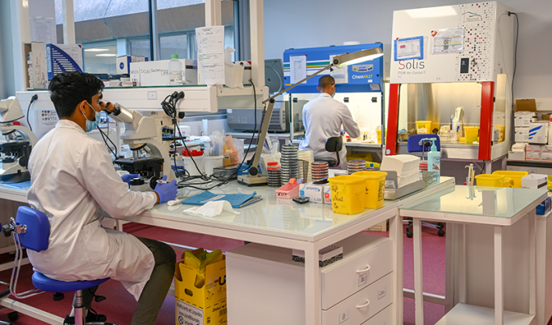
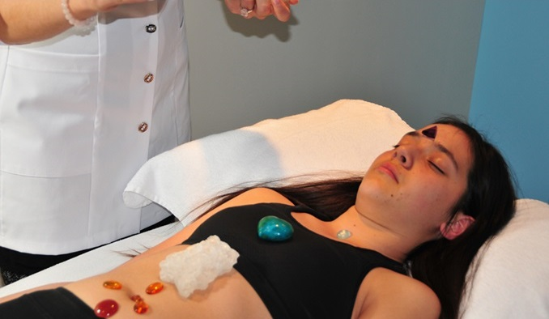
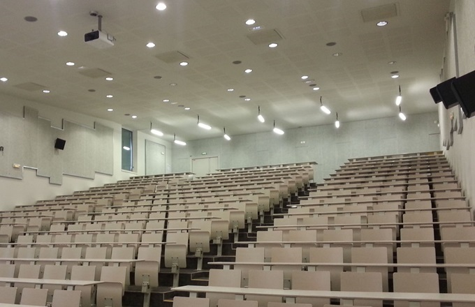

Bienvenue dans l'environnement exceptionnel de notre université de médecine alternative, un lieu où l'excellence académique rencontre des infrastructures de pointe pour former la prochaine génération de professionnels de la santé. Notre campus, conçu avec soin, offre un cadre idéal pour l'apprentissage, la recherche et l'épanouissement personnel.
Laboratoires de Recherche de Pointe
Explorez notre laboratoire de lithothérapie au sein de notre université, un espace novateur où les étudiants se plongent dans l'utilisation des cristaux pour favoriser le bien-être. Sous la supervision d'experts, ils acquièrent une expérience pratique inestimable, se préparant ainsi à offrir des séances de lithothérapie de qualité. Cette initiative s'inscrit dans notre engagement envers l'innovation et contribue au developpement de l'université.

Cliniques Universitaires Intégrées
Nous croyons en l'apprentissage pratique, c'est pourquoi notre université dispose de cliniques universitaires intégrées. Les étudiants ont l'opportunité de mettre en pratique leurs connaissances dans des conditions réelles sous la supervision de professionnels expérimentés. Ces cliniques jouent également un rôle crucial dans la prestation de soins de qualité à la communauté locale.

Bibliothèque Médicale de Renom
Allant au-delà d'un simple dépôt de connaissances notre bibiliothèque guide vers un équilibre corps-esprit, avec des bibliothécaires experts offrant un mentorat personnalisé. Carrefour d'innovation médicale, elle accueille des conférences et ateliers novateurs. Chaque page tournée devient une invitation à la transformation personnelle, offrant une compréhension plus profonde de soi-même et du potentiel de guérison.
Amphithéâtres Modernes
Les salles de cours et les amphithéâtres de notre université sont équipés des dernières technologies audiovisuelles pour faciliter un enseignement interactif et dynamique. Les étudiants bénéficient d'un environnement propice à la discussion et à l'apprentissage collaboratif, favorisant ainsi une compréhension approfondie des sujets médicaux. Même en amphithéâtre les professeurs sont dynamiques et invitent les élèves à participer.

Installations Sportives et Bien-Être
Nous croyons en l'équilibre entre le corps et l'esprit. Notre campus comprend des installations sportives de qualité, des espaces verts et des initiatives de bien-être visant à promouvoir la santé globale des étudiants. Des activités physiques régulières sont encouragées pour maintenir un mode de vie équilibré, essentiel pour la réussite académique.